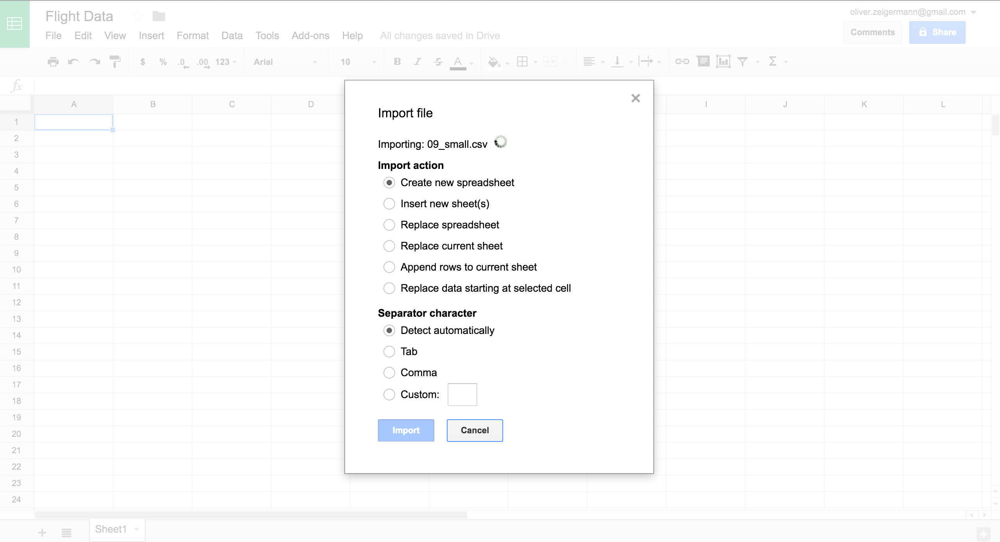
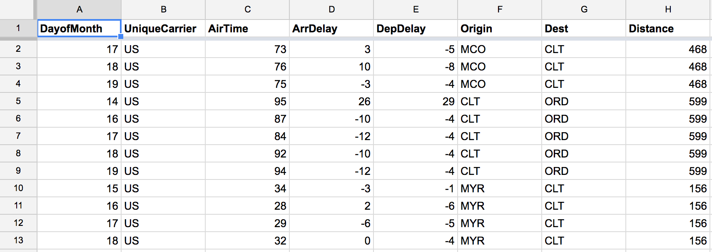
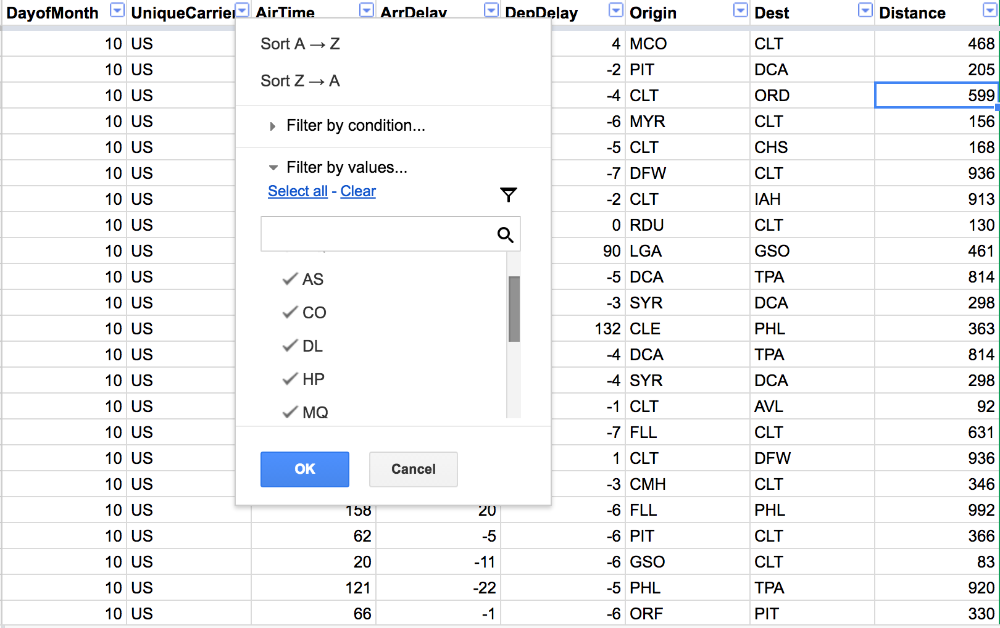
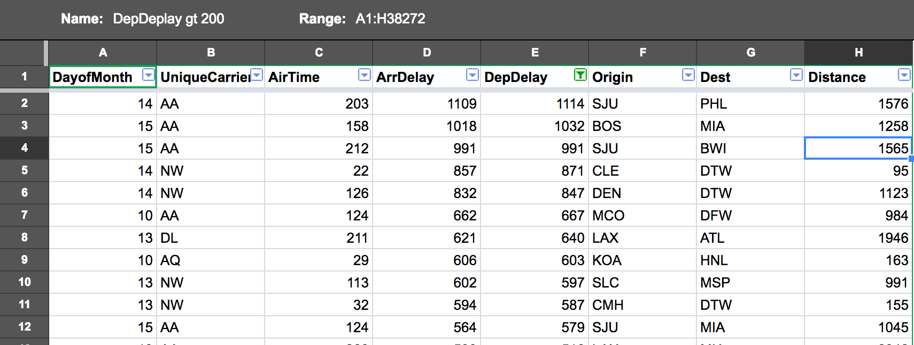
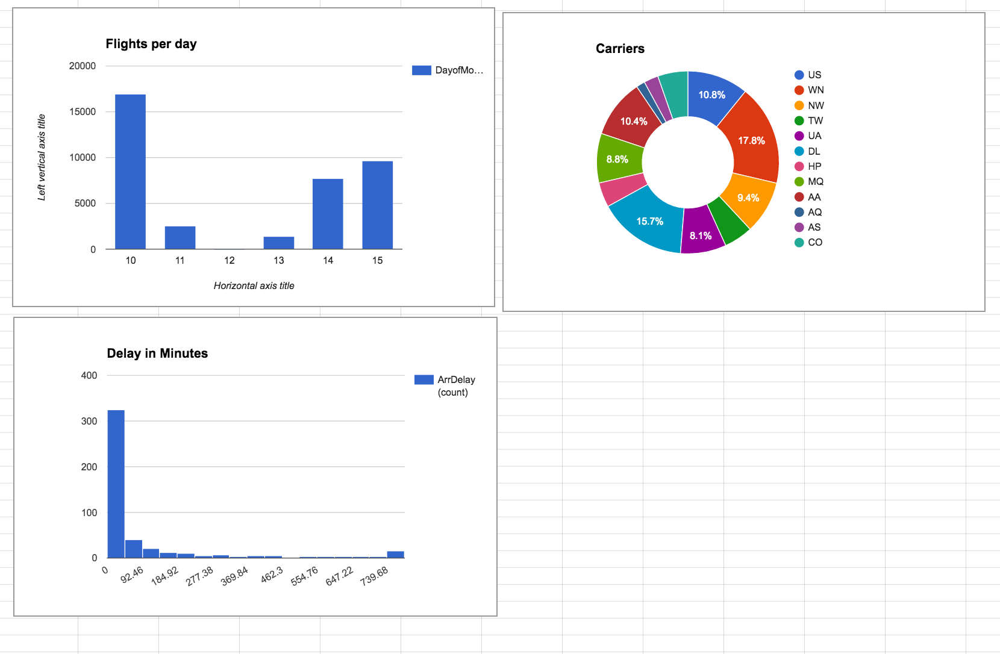
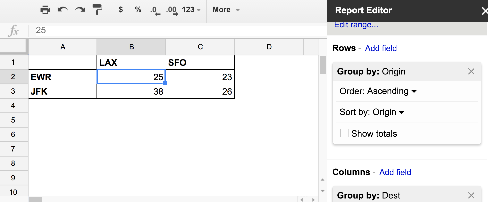
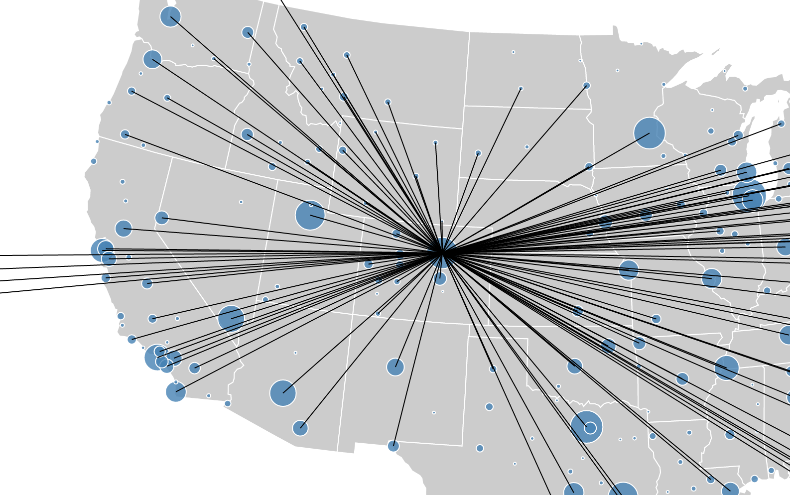

TODO
- Klare Beispiele für überraschende Erkenntnisse durch klicken herausarbeiten:
- Z.B.: was ist die Samstags-Beule?
- Gibt es eine Geschichte für die extrem Lange Verzögerung?
- Fragments aus Folien heraus nehmen
- Screenshots in Größe einpassen
- Ausdünnen
- Benefits und Drawbacks aktualisieren
Interactive Data Exploration in the Browser
Using Interactive Data Visualization to
explore the world
But why in the Browser
1: Zero-Installation for the user
2: Interactivity coming naturally
Example: Exploring all data sets of domestic US air-traffic
for September 2001
The raw data
approx. 400,000 data sets
approx. 11MB of data
9 colums
> head 09.csv
Month,DayofMonth,UniqueCarrier,AirTime,ArrDelay,DepDelay,Origin,Dest,Distance
9,5,US,67,22,31,MCO,CLT,468
9,6,US,73,14,19,MCO,CLT,468
9,7,US,70,43,54,MCO,CLT,468
> ls -hl 09.csv
-rw-r--r-- 1 olli staff 11M Oct 27 2015 09.csv
> wc -l 09.csv
391375 09.csv
No specific task or question
Exploring what just might be interesting
Options
- Google Sheets
- Elasticsearch / Kibana (ELK)
- D3 with crossfilter and DC
- D3 loading Segments from ELK
Google Sheets
Import
Up to 2 million cells
We have 9 * 400,000: too many for Google Sheets
> cut -f2,3,4,5,6,7,8,9 -d, 09.csv >09_no_month.csv
> awk -F, '$1 >= 10 && $1 <= 15' 09_no_month.csv > 09_very_small.csv
> ls -lh 09_very_small.csv
-rw-r--r-- 1 olli staff 1.0M Jul 21 21:46 09_very_small.csv
> wc -l 09_very_small.csv
38272 09_very_small.csv
Import
Data
Filters
Filters: All flights between JFK and STL
Physically change the data

Filters Views
Just a view on the data, more than one possible
Departure Delay > 200 minutes
Diagram
How many flights per day?

Mini Dashboard
flights per day / carriers / delay
Pivot Tables
Flights from NYC to SFO or LAX
Explore
The best is yet to come

Correlations, Outliers, etc.
Sheets can automatically find this


What I have learned
Without asking
- long arrival delays are caused be departure delays
- per 100 minutes you can fly around 857 miles
- some flights where delayed more than 1000 minutes (more than 16 hours)
- there seems to be a flight distance of 4962 miles in the US (around 10 hours of flight)
There are no limits
You can express any programm in a Spreadsheet
http://www.slideshare.net/Felienne/spreadsheets-for-developersLive Sample
https://docs.google.com/spreadsheets/d/1WrexNeH8WD00YbFhnr5m-oIywza4-XtOUr3viu1Q0aM/edit?usp=sharingBenefits
Drawbacks
D3 with crossfilter and DC
Things get more interactive and connected
Using full data set of September (10x the data)
D3.js: Dynamic graphics in the browser
D3.js
- http://d3js.org/
- Transform your data into visualizations in the browser
- Style of programming declarative
- Main field of use are diagrams using SVG (but D3 is not limited to that)
- Data is bound to SVG elements which change once the data changes
Crossfilter: Filtering millions of data sets in real time
- http://square.github.io/crossfilter/
- Can filter up to millions of data sets in real time in the browser
- Data sets are indexed when loaded
- You specify what you want to filter using dimensions
dc.js: Charting with D3 and Crossfilter
- http://dc-js.github.io/dc.js/
- Prebuilt integration of D3 and Crossfilter
- offers a couple of diagram types that are useful for interactive big data
- bar
- pie
- many more
Graphical Encodings

http://strataconf.com/big-data-conference-ny-2015/public/schedule/detail/43411
Initial Design

Order
Ordering Values: Possisbly first pie chart ever
http://blog.visual.ly/12-great-visualizations-that-made-history/
Order (Part #1): Display Carriers as a Pie Chart

Connect
Connect (Part #2): Origin, Destination, Carriers combined
Time
Time Series: London Underground ad from 1928

Time Series (Part #3): Filtering using Brushes
Map
Map (Part #4): All flights from Hawaii

Benefits
Drawbacks
ELK
Things scale
Using all of 2001 (once more 10x the data)
- Grundproblem: Access vs Excel, oder: große Datenmengen vs Interaktivität - Data needs to be (physically) close to the interaction to make it fast and thus most useful - Beliebige Datenmengen mit Interaktionen: ELK
ELK Stack
- Elasticsearch
- Search and Analytics Engine
- Indexes and stores structured or unstructured data
- Offers query language to search or aggregate data
- Logstash
- process data and store into Elasticsearch
- Ruby based import description
- Kibana
- interactive querying
- visualization (in dashboards)

Kibana
- generic frontend for Elasticsearch
- browser based
- allows for dashboards
- also allows to make arbitrary adhoc queries
Discover Data
using adhoc queries

Demo
Flights from LA or Newyark to Denver or Clinton between September 10th 2001, 11:12 and 15:38?

Flights Dashboard #1
Clicks trigger requests, responses update graphics
Demo
Adding a Departure Delay Barchart

Benefits
- works on any size of data
- with a little practice very easy to do
- provides widgets out of the box
Drawbacks
- limited in layout and widgets
- each update takes time
- smooth and continuous interaction limited
D3 loading Segments from ELK
- Elasticsearch delivers data over HTTP/JSON using query
- D3/Crossfiler/DC display partion of data
- Partition could be month
- Manually selected by user
Literally no one flying to Wyoming first half of December???
Final Matrix
| Google Sheets | D3 | ELK | Segmented D3 | iPython | |
|---|---|---|---|---|---|
| One tool for designer / user | |||||
| Required effort | |||||
| Easy to create new dashboard | |||||
| Interactivity | |||||
| Unlimited data size | |||||
| Offline | |||||
| Unrestricted widgets | |||||
| Auto Refresh | |||||
| Repl | |||||
| Turn Query into Dashboard | |||||
| Add your category here | |||||
Thank you
Questions / Discussion
Code for all examples: https://github.com/DJCordhose/big-data-visualization/code
Slides: https://djcordhose.github.io/big-data-visualization/2016_interactive_data_exploration.html
Oliver Zeigermann / @DJCordhose